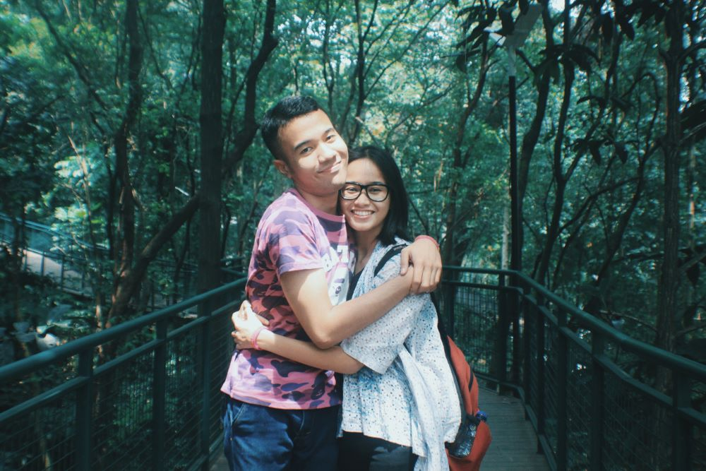

Hello Iqi, so this is my real wishes for you.
Not that the last one is fake, but this one is wishes that
i haven't told you (or longer one). By the way, welcome to the Acolyte Realm.
And congratulation for figuring out the password.
You may wonder, why did i put this song again and why
am i never get tired of this song.
I think this song is very well composed and it reminds me
of the first time i fell in love with you.
It was beautiful.
Again, Happy Birthday Baby! (i probably have said this for several times)
I am very happy to have the privilege to grow with you
To be with you at your lowest and your highest point in life
And to have your love without me asking.
I have grown so much because of you,
I became a little nicer to people
I know how to interact with people
You taught me how to deliver my thoughts in an actual word
You taught me how to say thank you to my loved ones
(Because if i'm really close to someone, i never say thank you
I thought they already know that i am grateful. But then i thought
It's nice for people to hear a thank you.)
You are the one who made me realize that
time conquer distance.
Just like when we went to Bandung for the first time,
It only took you a day to take me everywhere in Bandung
And bring me home safely the same day.
We can go everywhere if we spent our time well and not wasting it.
Having you in my existence is such a blessing
You are my first real boyfriend and i hope
you will be my last.
I have always had a great time with you and
you always ease both my insecurities and anxieties.
Your presence feels so warming
I feel really safe in your embrace
I don't know what wishes i should make for you
You don't need wish, because i know
you will always make it happen by working really hard on it
But i think i know what fits.
My wishes for my baby Iqi :
1.Always have the strength to achieve your dream.
2.For you to not to give up.
3.Some time for you to get some rest.
4.More international competition.
5.Get accepted into Traveloka. (u definitely will!)
6.A tesla, or cars that you're currently wishing for.
7.A very very very happy life!
8.To always be surrounded by people you love
9.To always be yourself
10.For you to never feel lonely!(you have me and your friends around)